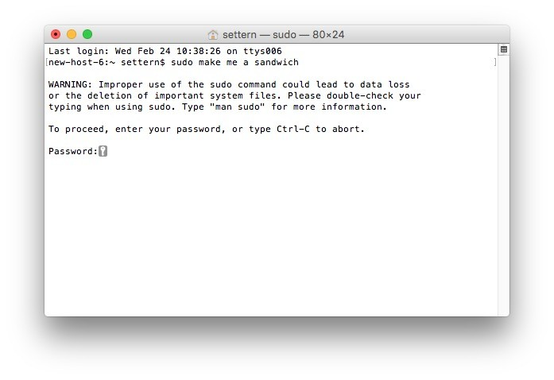
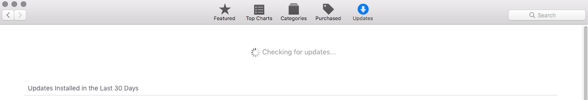
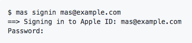
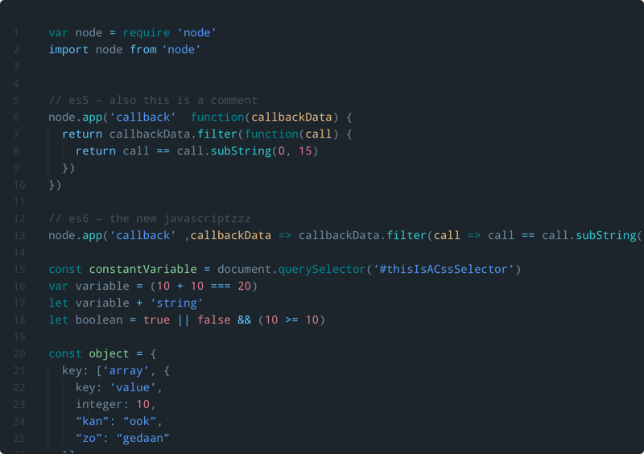
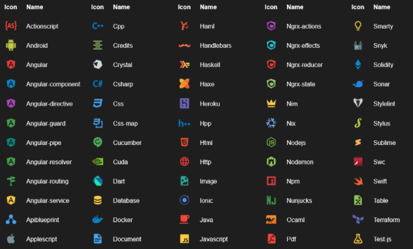

If you are brand new to a MacOS development environment then this guide is for you. This is all considering you just got your new laptop or desktop and want to get set up to have all the necessary tools to begin development.
The installs will pertain to both front and back end web development. I still have much to learn, but this is the process that I used to setup my Mac to fuel my development environment.
This was completed to my preferences and is my suggested method to getting set up. It is used to be a guide and that alone! Of course, any other questions, Google or StackOverflow will be your best bet.
By the end of the guide the goal is for you to be ready to go with your new setup. I hope you enjoy setting it all up as much as I did.
Let's go!
Open your Terminal via the search bar in the top right corner. This is also called
Spotlight which is a quick way to pull up applications on your system. When the Terminal is up make sure you use
the command
“pwd” to show where you are located in the system (i.e. /Users/you).
If at any point the following commands give you a permission error. This means you are not granted Administer privileges to utilize the Command Line. You will have to use the “sudo” command before and type in your password in Terminal.
The following commands will greatly increase the accessibility of your Mac during development.
Show Library folder
chflags nohidden ~/Library
Show hidden files
defaults write com.apple.finder AppleShowAllFiles YES
Show path bar
defaults write com.apple.finder ShowPathbar -bool true
Show status bar
defaults write com.apple.finder ShowStatusBar -bool true
Go to System Preferences for the following:
Important to note, these first two steps are incredibly important.
As soon as you get through the initial setup. Open up the Mac App Store in your dock or through the Finder. Go to Updates and check for the latest patches, security, and system updates.
Keeping your system up to date is crucial. Keep an eye out for updates on the regular.
Post update, you’ll need to install the Command Line Tools here. It will ask you to sign in using your Apple ID. If you do not see it listed immediately, search “Command Line Tools.” You’ll want the latest release considering you have High Sierra.
Homebrew, it’s the missing package manager for MacOS, and quite powerful at that.
Copy and paste the following code into your terminal to install Homebrew.
/usr/bin/ruby -e "$(curl -fsSL https://raw.githubusercontent.com/Homebrew/install/master/install)"
The following section on utilizing the App Store from the Terminal is completely optional. You can install each of these applications individually later on, but getting more familiar with Terminal and using the Command Line is a huge benefit to any beginner, in my opinion.
Please view the documentation before beggining here: mas-cli.
Install the mas-cli using Homebrew:
brew install mas
You’ll want to sign in to the App Store using:
mas signin email@email.com

Essentially, the mas-cli allows us to install multiple applications using a "Brewfile."
Let’s get your Brewfile setup. This will be a list of all programs to install from the App Store using a single command. Create the file using the “touch” command shown below.
touch Brewfile
Edit the file using TextEdit or by typing:
nano Brewfile
Our Brewfile contents:
tap 'caskroom/cask'
brew 'git'
brew 'npm'
brew 'yarn'
brew 'grunt'
brew 'node'
cask 'visual-studio-code'
cask 'atom'
cask 'flux'
cask 'google-chrome'
cask 'firefox'
cask 'vlc'
cask 'spotify'
mas 'Slack', id: 803453959
mas 'Bear', id: 1091189122
mas 'Trello', id: 1278508951
mas 'CopyClip', id: 595191960
mas 'Pocket', id: 568494494
mas 'The Unarchiver', id: 425424353
Save the file by typing Control + O
Exit the file by typing Control + X
Head back to Terminal. The following code will install all the applications listed in the Brewfile.
brew bundle
Official Homebrew Bundler repository.
These applications are your choice to download. You can add or remove any you wish from the file. If you know of some more programs that may be a cask you would like to add search to see if it's been added. If you're looking for a project later on, make one!
Everything is good to go with Homebrew and our Applications.
When we talk about Bash we will be updating the internals of the Terminal in our bash_profile dotfile.
Create your bash dotfile in your home folder.
touch .bash_profile
We’ll want to make an alias script to keep Homebrew and our system clean and up to date.
alias brewup='brew update; brew upgrade; brew prune; brew cleanup; brew doctor'
Head back to Terminal and run the following command:
source ~/.bash_profile
Now in Terminal all we have to run is the alias command
brewupto get Homebrew updating.
It’s a great idea to keep this updated daily, if not weekly.
I have a color scheme setup for my Terminal.
export> PS1="\[\033[36m\]\u\[\033[m\]@\[\033[32m\]\h:\[\033[33;1m\] \w\[\033[m\] \$ "
export CLICOLOR=1
export LSCOLORS=ExFxBxDxCxegedabagacad
Go ahead and add this to your ~/.bash_profile and save the file to view.
If you are interested in a further explanation of getting your own scheme check out this article from OSX Daily.
Image: Shopify
Go ahead and open up VS Code.
First, were going to view the Command Palette. The Command Palette is located under the View tab. Once it is clicked a drop down will appear and you will then search “>shell command: Install ‘code’ command in PATH” and hit Enter.
This enables you to type
code ‘filename’
in Terminal to open up a file in VS Code.
At the Welcome screen select both, “Install support for JavaScript” and “Install support for keyboard shortcuts of Atom.” (Also found here)
To view the keyboard shortcuts for Atom go here. They will be considerably helpful with the increasing the speed of your coding.
Themes are plentiful on VS Code. The one I have found to like the most is City Lights. Its minimal, colorful, and built by Yummygum.
My icon pack of choice is the Material Icon Theme.
Select the Extensions square located on the left hand side menu. I recommend searching and downloading these:
Git will be used as a version control system for your code. You will constantly be committing and pushing code using Git. SSH will uniquely identify you (and your computer) when your computer is communicating with other computers. Imagine that. Just think of it as a fancy password. Both Heroku and Github require SSH.
Git first then. Let’s go to Terminal.
git config --global user.name "First Last" (keep the quotes)
git config --global user.email "Email" (keep the quotes)
Use the same email address for Heroku, Git, Github, and SSH.
Confirm the changes have been made using:
git config --get user.name
git config --get user.email
You should see your user name and email printed to the Terminal.
Extra: to have colored output in Git add this to Terminal:
git config --global color.ui auto
I have added some alias commands to my git config file. Take a look at yours yourself using VS Code and the Terminal.
code ~/.gitconfig
Mine looks like this.
[user]
-
name
= First Last
-
email
= student@example.com
[alias]
-
a
= add
-
ca
= commit -a
-
cam
= commit -am
-
s
= status
-
pom
= push origin master
-
pog
= push origin gh-pages
-
puom
= pull origin master
-
puog
= pull origin gh-pages
-
cob
= checkout -b
[color]
-
ui = auto
The alias commands allow me to just type
git pom
instead of...
git push origin master
As a web developer you are always
looking for shortcuts to your workflow.
To see a list of your config settings in Terminal check it with:
git config --list
Boom. SSH now. Again. SSH the fancy password. Got it. Let’s check if you have one already.
ls ~/.ssh/id_rsa
This will return “No such file or directory” if you don’t have an SSH key yet.
Generate a key using:
ssh-keygen -t rsa -b 4096 -C "student@example.com"
student@example.com
is your actual email that you used with Git.
Expected result:
Generating public/private rsa key pair.
Enter file in which to save the key (/Users/student/.ssh/id_rsa):
Created directory '/Users/student/.ssh'.
Enter passphrase (empty for no passphrase):
Enter same passphrase again:
Your identification has been saved in /Users/student/.ssh/id_rsa.
Your public key has been saved in /Users/student/.ssh/id_rsa.pub.
The key fingerprint is:
88:54:ab:77:fe:5c:c3:7s:14:37:28:8c:1d:ef:2a:8d student@example.com
You’ll be asked to enter a passphrase next. I suggest using one.
Public vs. Private Keys |
If you open:
~/.ssh/
you will see both an “id_rsa” file and “id_rsa.pub”. The .pub is the public and can be shared freely, the _rsa must
be kept a secret.
Go ahead and add your generated key to the authentication agent using:
ssh-add ~/.ssh/id_rsa
You will be prompted your passphrase and the identity will be added.
gulp is another task runner that should be installed on your system globally. The choice is yours which to use Grunt or Gulp.
npm install --global gulp-cli
Let’s get up to speed with Ruby, by having the Ruby Version Manager (rvm) installed on your machine. This way we can be ready to use Jekyll, one of the most popular static site generators, if we please. Also important to note we can make sure we have the updated Ruby version without messing with Mac’s system build of it.
Move to Terminal and input:
\curl -sSL https://get.rvm.io | bash -s stable
Run
rvm list
to see the full list of versions available. We’re going to want 2.4.0.
rvm --default use 2.4.0
Confirm using:
rvm -v
Next we’re going to want a package manager for Ruby. Necessary for most tasks in Ruby projects.
gem install bundler
We’ve gone over a ton. You have a good setup to get going with your development.
Again, I credit and thank the resources that I have listed in this guide. When I started researching what I needed for development I never came across an article that gave a particular order. I believe, in my opinion, this is a great start for any newcomer to MacOS and web development.
Enjoy!